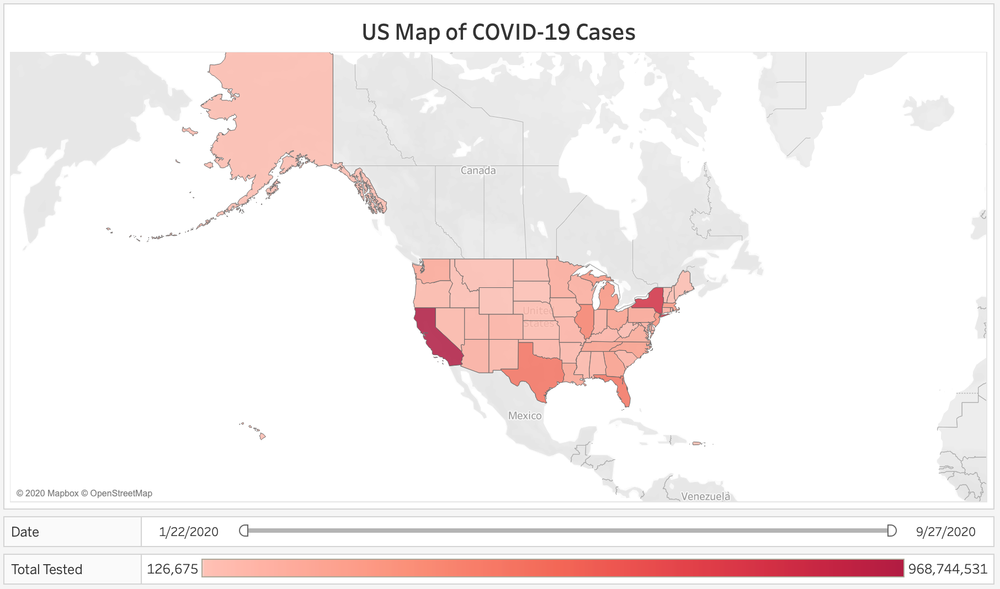
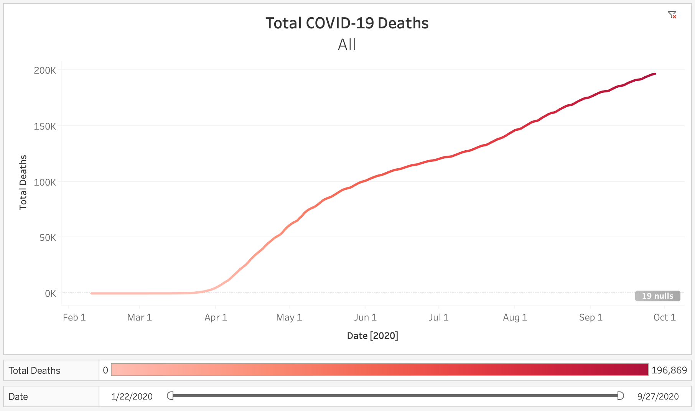
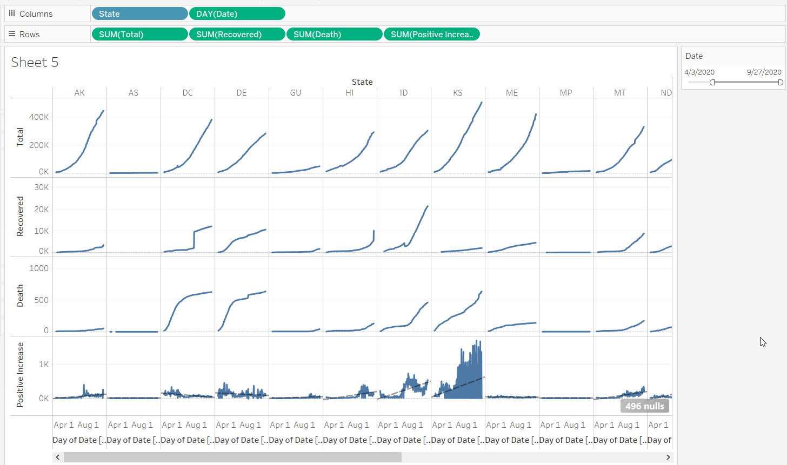
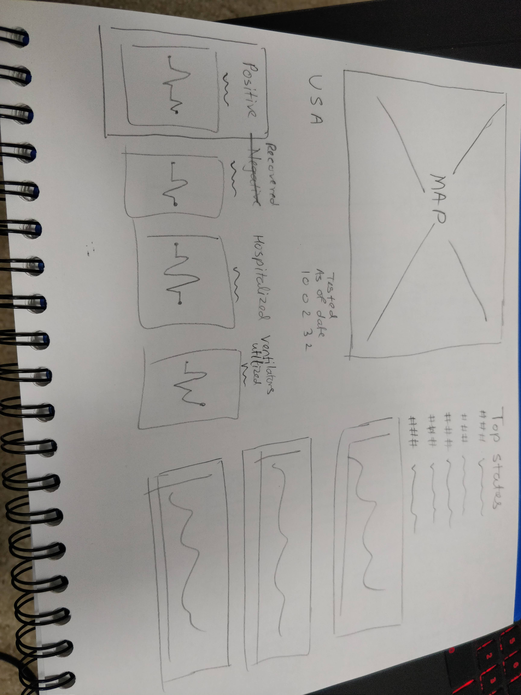
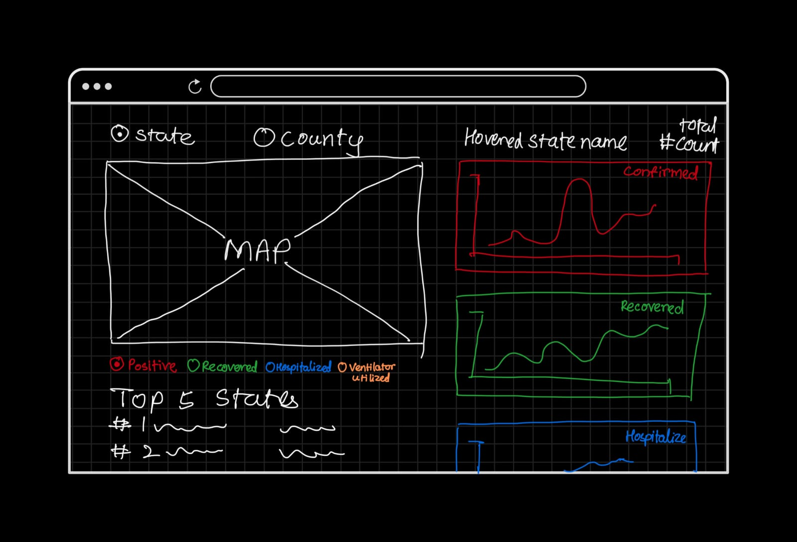
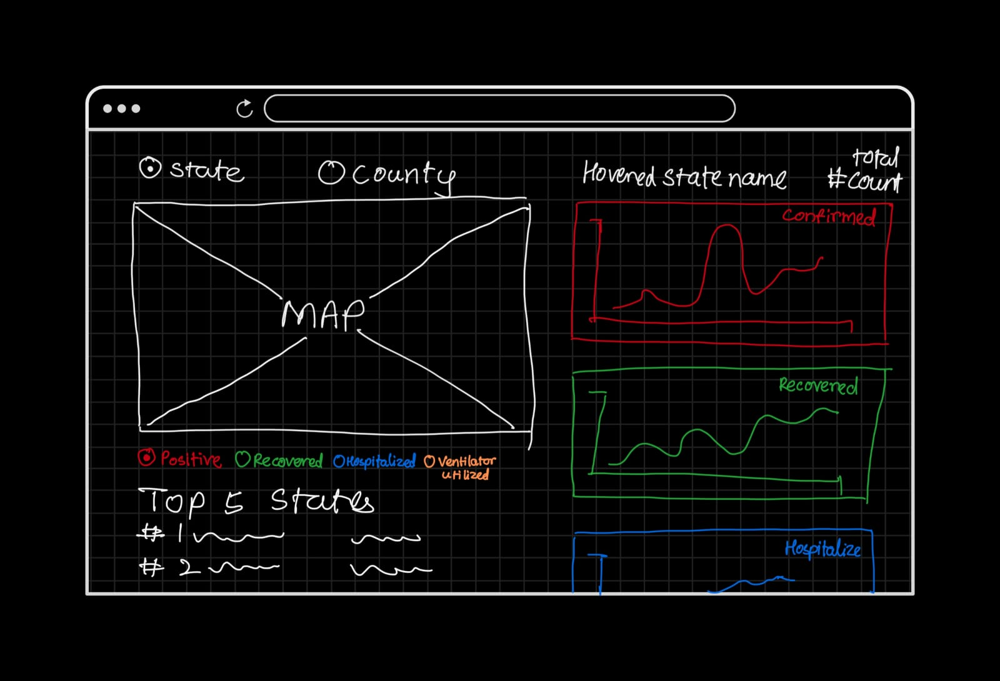
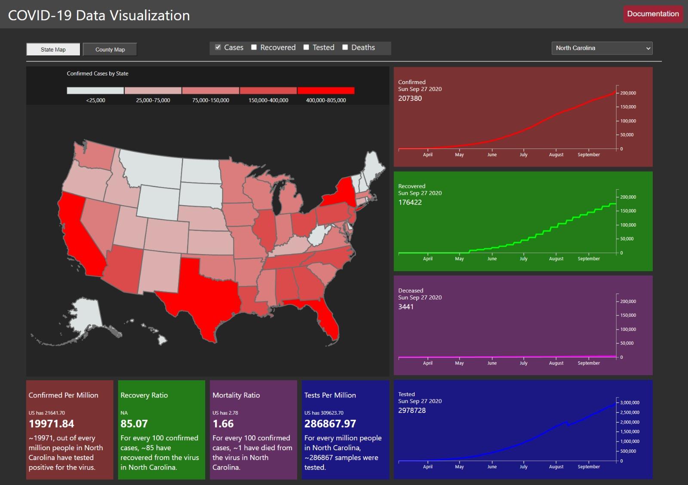

Project 2 Documentation
Project 2 forINFO-H517 Visualization Design,Analysis, & Evaluation class.
The group members are Darshan Patni, Evan Ruder, Siddhi Joshi, and Nikhil Morar. We built a COVID-19 dashboard using HTML, Javascript, and D3.
The dataset is obtained from the COVID-19 Tracking projectandNYTimes.
This dataset has information from 50 US states and the District of Columbia at daily level. We got the three .csv datasets from Kaggle (Kag goal) that make up the total daily level, then broken down by state, and then county. The data begins with the first reported coronavirus case in Washington State on January 21st, 2020 through September 27th, 2020. We added another dataset to the visual to know the population data from the United States.
We started the design process by visualizing the data in Tableau, looking for visualizations that provided insights and trends. Following are some screenshots of visualizations we created in Tableau.
  
After understanding the data and trends from the Tableau visualization we drew up some sketches for the website.

 

Final Dashboard Design

To start off, we put the map together with geo json data and built in functions in d3. The default map is colored based on confirmed positive covid cases in that state. As you hover over each state, the line graphs on the right update to that specific state. All the maps are zoomable and pannable. After going through many different variations within the hovering functionality, we decided that displaying a tooltip would be helpful and not distracting, especially for those who are unfamiliar with the United States. The tooltip shows the state name, and number of cases, deaths, and tests. Adding a legend to the map was from d3 map legend plug in that allowed us to quantize the various filter variables which also determines the color for each state. You can filter the map coloring with the checkboxes at the top and the colors will interpret the data for each variable. We have also considered coloring the map based on per capita ratios of the COVID case statistics but as default the raw data seemed important to reflect considering the severity of the topic. Despite this, we did include a per capita calculation that will be discussed later.The creation of the county map was done very similarly to the state one and functions in a similar way minus the line chart interaction. While the line graphs do not interact with the county map, you can still hover over and view specific counties. The COVID data limits in the county dataset were for cases and deaths. There were plenty of counties with missing data and inconsistencies with the naming (Alaska) between the GEOJSON and our COVID 19 data. This meant going through each so that data was not missing and that naming stayed consistent.
In conclusion, the team was able to visualize the number of total tested, positive, recovered, and death cases state wise and in a temporal manner. The map helps showcase how each state and county was affected for these parameters. The line charts help the users understand how these parameters compare with each other.